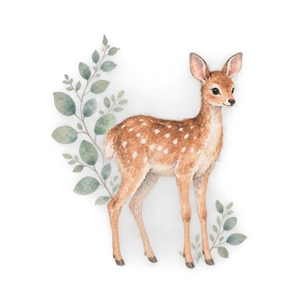
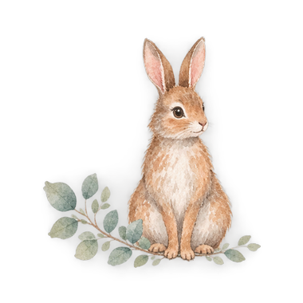
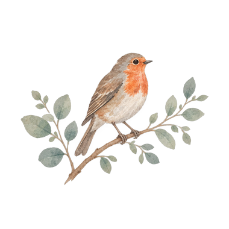
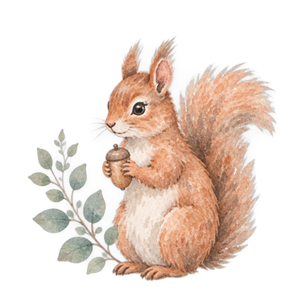
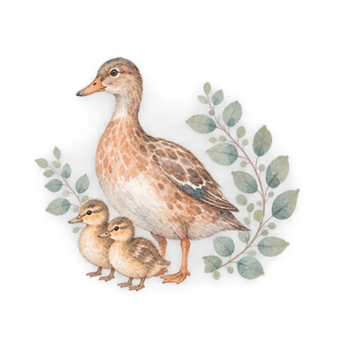

Trying to conceive
Cycles, timing and the two-week wait, without the pressure. IVF and treatment included.
Start hereTrying Pregnancy First year Toddler Family
One story, told in chapters. Trusted guidance, a Companion that answers carefully, and a journal in print and on screen, from the first hope to family life.
Already with us? Sign in
AI-generated brand-film concept · design prototype, not production footage
Trying to conceive, pregnancy, the first year, the toddler years and family life are chapters of one story. Each has its own colour, its own pages and its own questions. Everything you keep comes with you to the next.

Cycles, timing and the two-week wait, without the pressure. IVF and treatment included.
Start here
Week by week, your baby visibly growing, with a page for every week in your journal.
Find your week
Sleep, feeding, firsts, and the months as they come, with space for your own recovery.
Find your month
Guidance for the walking, talking, no-saying years.
Start here
Partners, siblings, and the next chapter when you are ready.
Start hereA printed journal for pregnancy and the first year, and a digital journal that follows it week by week. Tell us your week, your cycle day or your baby's age and every page knows where you are. Write in either, or both; nothing is copied between them unless you choose to.

The first turning
Ask what you would ask a friend who happens to know the guidance. It answers in plain paragraphs for the chapter you are in, shows what it used and what it did not, and says so when something is outside what it can safely answer.
Is it normal to still feel sick at week 12?
Yes, very often. For many people nausea begins to ease between weeks 12 and 14, as the placenta takes over hormone production and hCG levels settle. That is an average, not a deadline.
A line, a photo, a few seconds of video, your own voice. Each week has a place for them, in print and on screen, and they stay yours: private, exportable, never shared unless you choose to.
What do you want to remember about these first 12 weeks?
The room was darker than I expected and quieter. We held hands and didn't say anything until the heartbeat.

 0:18
0:18On the way home from the scan.
Private to you. Only you can see these. The Companion does not read your reflections, photos, videos or voice notes.
Start wherever you are. When one chapter ends, the next is already yours, in the same colours and the same calm, with everything you kept.